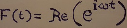
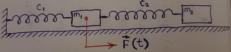
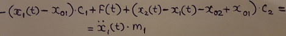
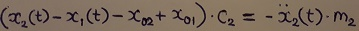
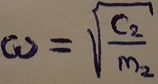
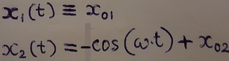
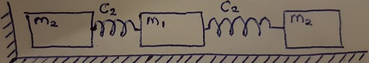

Рассмотрим систему из двух классических грузиков с пружинами, второй из которых (правый) связан с системой только одной пружиной, а
к первому приложена внешняя возбуждающая сила


Пусть в состоянии покоя
абцисса первого грузика x01, абцисса второго грузика
x02.
Уравнение для первого грузика:

Уравнение для второго грузика:

При внимательном рассмотрении этих двух уравнений обнаруживаем, что
в случае

имеется необычное решение, когда сила F не нулевая,
тем не менее первый грузик неподвижен:

Получилось решение, нелепое с точки зрения реальной физики:
сила F вроде бы совершает работу, но колеблется у нас только один объект - это второй грузик.
Стало быть, внешней энергии некуда деваться, кроме как передаваться на второй грузик.
Возникает вопрос: каким образом происходит эта передача внешней энергии, если первый грузик неподвижен?
Объяснение
Дело в том, что имеющийся в физике термин «сила» - абстрактный термин, могущий стать источником разнообразных
спекуляций (в этом плане он по своей вредности приближается к такому известному псевдонаучному термину, как «энергетика»).
Что и происходит в данном примере.
Так или иначе, вынуждающую силу F придётся каким-нибудь образом реализовывать механически.
В частности, если нашу систему немножко преобразовать:

то внешняя сила F с успехом заменяется на вполне конкретный третий (самый левый) грузик массой m2, колеблющийся симметрично второму грузику.
При этом видно, что пружина, которая соединяла первый грузик со стеной абсолютно не играет никакой роли и мы её можем убрать из системы (как и стену).
Теперь мы видим, что никакой передачи энергии не происходит, да и нет вообще никакого притока внешней энергии: второй грузик колеблется сам по себе, третий - сам по себе, первый же грузик, поскольку
справа и слева от него колебания происходят в противофазе, - стоит на месте